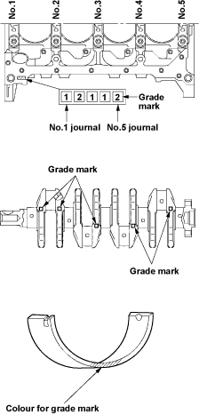

Bearing Grade
Mark
(Reference)
Mark
Mark

Engine Block
|
7-6 |
Crankshaft Bearing Grade Selection
| Cylinder Block Journal | Crankshaft Journal | Crankshaft
Bearing Grade Mark |
Oil Clearance
(Reference) |
||
| Grade
Mark |
Diameter | Grade
Mark |
Diameter | ||
| 1 | 55.992 – 56.000 mm | |
51.918 – 51.928 mm | Blue | 0.032 – 0.058 mm |
|
51.928 – 51.938 mm | Black | 0.030 – 0.056 mm | ||
| 2 | 55.984 – 55.992 mm | |
51.918 – 51.928 mm | 0.032 – 0.058 mm | |
|
51.928 – 51.938 mm | Brown | 0.030 – 0.056 mm | ||
| 3 | 55.976 – 55.984 mm | |
51.918 – 51.928 mm | 0.032 – 0.058 mm | |
|
51.928 – 51.938 mm | Green | 0.030 – 0.056 mm | ||
